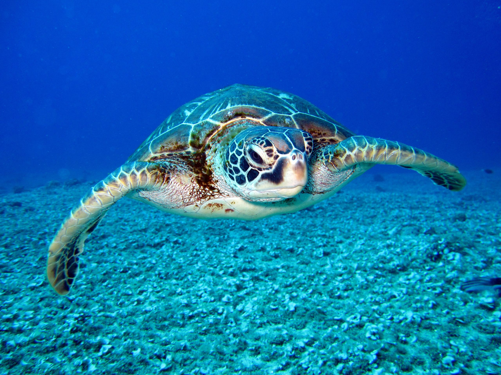

As with snakes and lizards, freshwater turtles are reptiles. Canada is home to eight different kinds of native freshwater turtles. Each of them is endangered, or at least one of their populations or subspecies is. Predators are mostly kept at bay by their shell. To complete their life cycle, they are all dependent on access to both water and land. They live in a variety of freshwater settings, including lakes, streams, and rivers as well as many types of wetlands.
There are numerous giant tortoise subspecies that can be found on various islands and have various physical characteristics. The tortoises that inhabit the larger islands, where it rains more frequently, have "dome"-shaped shells, while the smaller tortoises that inhabit the drier regions have "saddleback"-shaped shells. All continents, with the exception of Australia and Antarctica, are home to turtles, which are only terrestrial in nature.
The shallow seagrass meadows of the Indian Ocean, the vibrant coral reefs of the Coral Triangle, and the sandy beaches of the Eastern Pacific are all home to seven different species of sea (or marine) turtles. Sea turtles spend most of their life in the ocean, even though these highly migratory animals occasionally come ashore to either bask or nest. Five of these species—the green, hawksbill, loggerhead, leatherback, and olive ridley—are the focus of WWF's sea turtle work.
| Freshwater Turtles | Land Tortoise | Marine Turtles |
|---|---|---|
They are widespread in all of the dry zone national parks and may also be found on Mannar Island and the Jaffna Peninsula. In the majority of Wilpattu's freshwater bodies, these turtles are quite prevalent. |
The star or starry tortoise (Geochelone elegans) inhabits the sand dunes, parklands, and scrub jungles of the north-western, north-central, eastern, and northern provinces and can be found in the island's drier regions. |
Although sea turtles spend the majority of their lives in the water, they occasionally come ashore to lay their eggs. From Mount Lavinia, along the west coast, over the south coast, and up to Arugam Bay on the east coast, their native nesting sites in Sri Lanka extend. |
|  | ||
| This table shows the three types of turtles in Sri Lanka, but there are much more. | ||